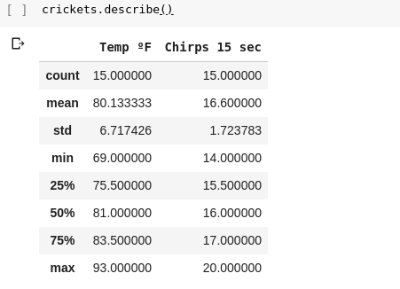
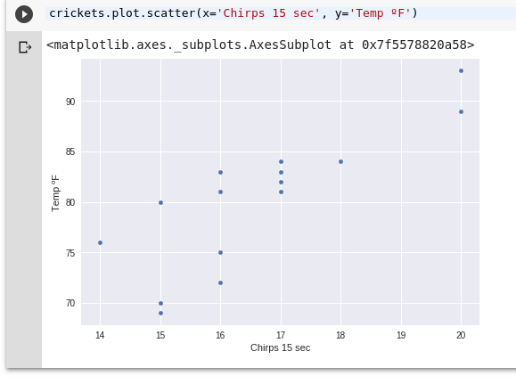
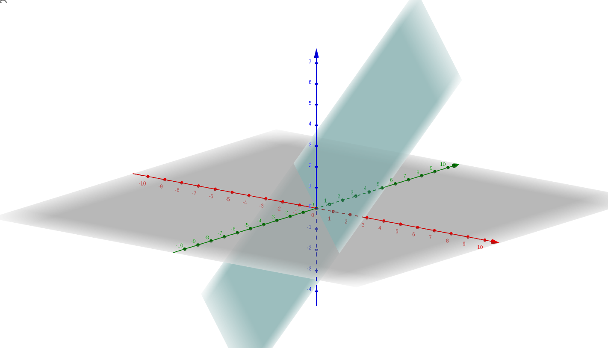
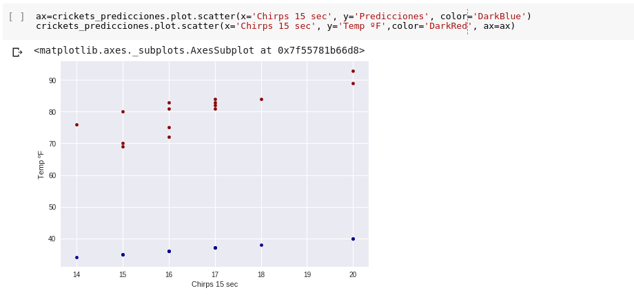

ML
Bases ML
Error - Función Perdida - Función Error
Antes:
| Entrenamiento | $X$ | Valores Discretos |
| Optimización | Inferencia | No Supervisado |
| Ejemplos | $Y'$ | Supervisado |
| Regresión | Etiqueta | Agrupamiento |
| Refuerzo | Objetivo | Reducción Dimensionalidad |
| Clasificación | Error | Valores Continuos |
| Características | Modelo | $\propto |Y - Y'|$ |
Si ML suele ser iterativo,
¿Cómo comparo modelos?
Iniciemos con un ejemplo
Ejemplo
| Temp ºF | Chirps 15 sec |
|---|---|
| 89 | 20 |
| 72 | 16 |
| 93 | 20 |
| 84 | 18 |
| 81 | 17 |
| 70 | 15 |
| 82 | 17 |
| 69 | 15 |
| 83 | 16 |
| 80 | 15 |
| 83 | 17 |
| 81 | 16 |
| 84 | 17 |
| 76 | 14 |
Objetivo:
Quiero predecir la temperatura dada la cantidad de chirridos
¿Qué tipo de problema es?
¿Qué tenemos?
¿Qué tenemos?
¿A qué se me parece?
¡A una Linea!
$y=mx+b$
$\downarrow$
$y'=b+w_1x_1$
$y'=w_0+w_1x_1$
$y'=b+w_1x_1$
| $y'$ |
Label-Etiqueta |
| $b$ |
Bias ($w0$) |
| $w1$ |
Weight- Peso característica 1 |
| $x1$ |
Característica 1 |
Si se tienen mas características :
$y'=b+w_1x_1+w_2x_2$
Volviendo a nuestro problema
$y'=b+w_1x_1$
¿Cuál linea?
Yo creo que $b=20$ y $w_1=1$
¿Cómo sé si mis parámetros son buenos?
Función de Error - Perdida
$y'=b+w_1x_1$
$b=20$ y $w_1=1$
| Chirridos 15s | Temp ºF | Predicción | Error |
|---|---|---|---|
| 20 | 89 | ? | ? |
| 16 | 72 | ? | ? |
| 14 | 76 | ? | ? |
¿Error?
Valores reales vs predicción
¿Cómo mido el error?

{kind=link}
Error por ejemplo
$y-y'$
$|y-y'|$
$\sqrt{y^2 - y'^2}$
Error por ejemplo
| Chirridos 15s | Temp ºF | Predicción | Error |
|---|---|---|---|
| 20 | 89 | 40 | ? |
| 16 | 72 | 36 | ? |
| 14 | 76 | 34 | ? |
Error promedio
|
$E=\frac{1}{N}\sum_{i=1}^{N}{|y_i-y_i'|}$ |
Mean Absolute Error: MAE |
|
$E=\frac{1}{N}\sum_{i=1}^{N}{y_i^2 - y_i'^2}$ |
Mean Square Error: MSE |
|
$E=\sqrt{\frac{1}{N}\sum_{i=1}^{N}{y_i^2 - y_i'^2}}$ |
Root Mean Square Error: RMSE |
Nota:
$N$ es el total de ejemplos
a veces usan $m$
¿Cual par de parametros se ajusta más?
¡Iteren!
Descenso a la colina
Otros Conceptos
Learning Curve
Overfitting (Ejemplo con polinomios en vez de rectas)
ROC curve
Otro Conjunto de Datos
IrisOtros Conceptos
Test,Validation,Train Sets
Matrix de confusion
Precision(Cuantos de los elegidos eran importantes): $\frac{TP}{TP+FP}$
Recall(Cuandos de los importantes fueron elegidos): $\frac{TP}{TP+FN}$
F1 Score: $2\frac{precision*recall}{precision+recall}$